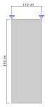

Aplicação na mão
Com a fundamentação sobre o estado pleno e as definições teóricas sobre os elementos do estado plano, vamos aplicar esse conhecimento na solução da estrutura da parede içada para a obtenção das tensões causadas na parede em função de seu peso próprio. A parede que vamos analisar, conforme já vimos, possui uma altura de 8,5 m, um comprimento de 1,5 m e uma espessura de 20 cm, construída em concreto armado $\gamma_{ca}$ = 25 kN/m3 com os olhais para içamento posicionados de acordo com a idealização estrutura da figura.

A parede foi moldada em concreto armado classe C35 ($f_{ck} = 35$ MPa de resistência característica) com granito de agragado graúdo ($\alpha_e = 1$) e portanto possui o módulo de elasticidade inicial, de acordo com a NBR-6118 - Projeto de estruturas de concreto, para concretos entre C35 e C50 de:
O coeficiente de Poisson será adotado como o padrão da literatura de 0,20.
Geração da malha de elementos
Essa malha nada mais é que a divisão do domínio da estrutura em pequenos subdomínios que determinamos de elementos. A questão é como fazer essa malha. A estrutura da parede será discretizada em elementos quadrilaterais, portanto, precisamos dividir o domínio em pequenos quadrados, representativos de elementos finitos quadrilaterais.
Mas, o que esse procedimento de malha deve nos retornar de informação? Basicamente nós precisamos descobrir as coordenadas dos nós de todos os elementos da malha, a incidência de cada elemento, ou seja, quais nós fazem parte de qual elemento e e claro, para que isso funcione de forma lógica, definir uma numeração para os nós que possa ser utilizada para a aplicação dos conceitos de montagem da matriz de rigidez da estrutura e do vetor de forças nodais equivalentes.
Poderíamos fazer isso definindo uma posição para a origem do sistema x-y da estrutura, que poderia, por exemplo, ser o canto inferior direito da parede, estabelecer um tamanho e forma de elemento, por exemplo, retangular de lado 150 cm na direção x e 170 cm na direção y, e calcular as coordenadas relativas a divisão do domínio da parede utilizando essas elementos em x e y para a obtenção das coordenadas nodais. Após, definiríamos uma numeração coerente para os nós como, por exemplo, iniciando em 1 na origem e correndo primeiro em x e depois em y a numeração até o último nó no canto superior direito da parede, calcularíamos a matriz dos graus de liberdade da estrutura em função dessa numeração dos nós e então escreveríamos uma matriz de incidência para cada elemento.
A figura a seguir mostra a malha de elementos finitos gerada com a numeração dos nós e elementos, assim como dos graus de liberdade ao lado. Os números dos elementos estão dentro de quadrados, dos nós em círculos e dos graus de liberdade em cinza.

Nossa malha resultou em 5 elementos de 4 nós cada, com 12 nós na estrutura e 24 graus de liberdade. Assim, podemos escrever nossa matriz GL com os graus de liberdade da estrutura para direções x e y.
Observe que numeramos os graus de liberdade restringidos por último para facilitar na hora de determinar a matriz de rigidez para o cálculo dos deslocamentos e reações de apoio.
Isolando cada elemento da estrutura podemos escrever a relação de cada nó da estrutura com cada elemento e determinar a matriz de incidência dos elementos. Comumente na literatura a numeração de elementos bidimensionais é feita no sentido anti-horário iniciando em qualquer nó. Nos devemos seguir a mesma ordem que foi definida nos nós do elemento padrão para a obtenção das funções de interpolação do elemento quadrilateral. Além disso, observe que no sistema local nosso elemento é quadrado e terá lado de comprimento constante igual a 2. Portanto, a matriz de incidência dos elementos $IE$ fica:
Diferente das análises com elementos unidimensionais, aqui as coordenadas dos nós são fundamentais para a determinação da matriz de rigidez dos elementos, já que influenciam diretamente no cálculo do Jacobiano. Portanto, vamos definir desde já a matriz com as coordenadas dos nós.
Tensor constitutivo do material
Antes de iniciar o cálculo das matrizes de rigidez dos elementos, vamos definir o tensor constitutivo do material. Como a parede é relativamente fina e poderá se deformar livremente na direção perpendicular ao plano, devemos trabalhar com o estado plano de tensões usando o tensor constitutivo simplificado.
e:
Portanto, o tensor constitutivo do material é:
Com:
Determinação das matrizes de rigidez globais dos elementos
Lembra da teoria que desenvolvemos para a formulação do elemento quadrilateral? Então, chegamos a definição que para calcular a matriz de rigidez do elemento bilinear de 4 nós, precisamos do seguinte procedimento:
- Calcular as derivadas das funções de interpolação no r-s substituindo cada coordenada r e cada coordenada s pelas respectivas coordenadas de no ponto de Gauss;
- Determinar o Jacobiano em função das coordenadas do elemento da estrutura e das derivadas das funções de interpolação nos pontos de Gauss;
- Calcular as derivadas das funções de interpolação no x-y, função do inverso do Jacobiano e das derivadas das funções de interpolação nos pontos de Gauss;
- Distribuir as derivadas das funções de interpolação no x-y calculadas, na matriz $\textbf{B}$;
- Calcular a parcela relativa ao ponto de Gauss em questão multiplicando pelo respectivo peso, espessura da parede e determinante do Jacobiano para a correção da área.
Repetir todo o procedimento de 1 a 6 para cada ponto de Gauss para a obtenção de $\textbf{k}_e$:
Avaliação das derivadas das funções de interpolação nos pontos de Gauss
Primeiro precisamos calcular o valor das derivadas das funções de interpolação em cada ponto de Gauss. As derivadas das funções de interpolação para o elemento bilinear padrão de 4 nós em r e em são.
Sendo $P_i$ relativo as coordenadas r dos pontos de Gauss e $P_j$ as coordenadas s. Nós precisamos avaliar essas funções de interpolação em cada ponto de Gauss, ou seja, todas elas serão avaliadas para cada ponto de Gauss. Os valores para cada função de interpolação em cada ponto de Gauss são mostrados abaixo:
Ponto 1 de Gauss: r = $\dfrac{1}{\sqrt{3}}$, s = $\dfrac{1}{\sqrt{3}}$
Ponto 2 de Gauss: r = $-\dfrac{1}{\sqrt{3}}$, s = $\dfrac{1}{\sqrt{3}}$
Ponto 3 de Gauss: r = $-\dfrac{1}{\sqrt{3}}$, s = $-\dfrac{1}{\sqrt{3}}$
Ponto 4 de Gauss: r = $\dfrac{1}{\sqrt{3}}$, s = $-\dfrac{1}{\sqrt{3}}$
Esses valores acima são constantes para toda a malha, já que foram determinados pelas funções de interpolação do elemento padrão nos pontos de Gauss do elemento padrão e servem para todos elementos da estrutura.
Como em cada ponto de Gauss temos valores diferentes para as derivadas das funções de interpolação, teremos Jacobianos diferentes de acordo com o ponto de Gauss sendo avaliado.
Determinação dos Jacobianos
O Jacobiano é calculado multiplicando-se as coordenadas dos elementos na estrutura pelas derivadas das funções de interpolação do elemento padrão no sistema r-s avaliadas em cada ponto de Gauss.
Lembrando que a ordem das coordenadas deve seguir a ordem definida nas funções de interpolação que é a mesma ordem que escrevemos na matriz de incidência dos elementos. Portanto, podemos usar essa matriz para escrever a matriz das coordenadas dos nós dos elementos $\textbf{x}_e$. Então, para cada elemento $e$, temos:
Observe que na matriz acima $\textbf{IE}_{e, 1}$, por exemplo, é o primeiro índice de $\textbf{NO}$, assim como os demais. Então, vamos calcular os Jacobianos começando pelo elemento 1 para todos os pontos de Gauss. Como:
Então, multiplicando a matriz com as coordenadas dos nós do elemento 1 acima com cada matriz das derivadas das funções de interpolação avaliada em cada ponto de Gauss, temos os Jacobianos para cada ponto de Gauss $P_i$ para o elemento 1:
Mas são todos iguais?! Exatamente, mas porque? Lembra o que o Jacobiano determina o mapeamento entre dois sistemas de coordenadas, portanto, como era de se esperar quaisquer pontos do elemento 1 serão mapeados da mesma forma entre os sistemas r-s e x-y, já que o elemento na estrutura é duplamente simétrico, com arestas paralelas aos eixos x-y assim como o elemento padrão para os eixos r-s que também é duplamente simétrico. Além disso, o Jacobiano também faz uma relação da distorção dos elementos entre os sistemas de coordenadas, tanto que podemos corrigir a área do elemento distorcido com o determinante do Jacobiano.
Vamos pensar um pouquinho: se o Jacobiano fornece uma mapeamento entre dois sistemas de coordenadas em função da distorção do elemento no sistema x-y aliado ao fato de todos os elementos da estrutura possuírem o mesmo tamanho, mesma forma e mesma distorção relativa ao elemento padrão, retangular de 150cm x 170cm, então o Jacobiano é igual para todos? Isso mesmo! Abaixo o Jacobiano para o primeiro ponto de Gauss para todos os 5 elementos.
No caso específico da estrutura da parede com a malha proposta nesta aplicação o Jacobiano é igual. Se os elementos na estrutura não possuírem o mesmo tamanho, forma e distorção os Jacobianos seriam diferentes entre os elementos e também seriam diferentes nos pontos de Gauss, visto que cada posição de cada ponto de Gauss pode precisar de um mapeamento diferente.
Sendo assim, em nossa aplicação o Jacobiano é único para todos os elementos e sua inversa vale:
Determinação das matrizes das derivadas das funções de interpolação nos elementos na estrutura
Conforme observamos, sendo nosso Jacobiano constante para todos os elementos e as derivadas das funções de interpolação no r-s iguais para todos os elementos em cada ponto de Gauss, podemos concluir que a matriz das derivadas das funções de interpolação nos elementos na estrutura, no sistema x-y, é igual para todos os elementos em cada ponto de Gauss para esta apĺicação.
Multiplicando a inversa do Jacobiano pelas derivadas das funções de interpolação no r-s avaliadas em cada ponto de Gauss, determinamos as derivadas das funções de interpolação no sistema x-y para cada ponto de Gauss.
Distribuindo os valores obtidos para derivadas das funções de interpolação no sistema x-y corretamente para determinar as deformações na estrutura, obtemos a matriz $\textbf{B}$ para cada ponto de Gauss.
Cálculo da matriz de rigidez dos elementos
Conforme já aprendemos, a matriz de rigidez dos elementos aproximada pela integração numérica, usando a quadratura de Gauss, é calculada com a equação:
Observe que foi suprimido um dos somatórios pois já obtemos a matriz $\textbf{B}$ avaliada nas coordenadas r e s dos pontos de Gauss, então esse somatório significa correr nessas matrizes. Bem, já temos as matrizes $\textbf{B}$ avaliadas em cada ponto de Gauss, já conhecemos seus respectivos pesos $W_i$ ou $W_j$, o tensor constitutivo do material já foi definido e calculado, conhecemos o valor da espessura $t=20$ cm e sabemos que o determinante do Jacobiano, igual para todos os elementos, vale:
E como todos os elementos possuem os parâmetros e variáveis iguais para o cálculo da matriz de rigidez, chegamos a conclusão que a matriz de rigidez de todos os elementos é a mesma. Portanto, somente precisamos fazer o somatório da equação $\ref{eq:ke}$ para obter a matriz de rigidez dos elementos.

Determinação da matriz de rigidez da estrutura
Conhecemos já duas estratégias para a montagem da matriz de rigidez da estrutura: o indexador e o coletor. O indexador é bem simples de entender e fácil de implementar, mas somente monta a matriz de rigidez completa, já o coletor é um tanto mais complexo, porém monta somente as matrizes que precisamos e fornece uma visualização geral dos acoplamentos entre elementos na estrutura.
O coletor para o elemento bilinear de 4 nós se escreve como:
Lembrando que $i$ é relativo aos nós do elemento, $j$ a cada grau de liberdade do nó e $b$ o número do elemento com um total de $t_{el}$
Coletor
Lembre-se que, se for usar o coletor e se basear na derivação feita em pórticos, que a porção $i^2 + (j - 1)$ somente se aplica ao elemento de pórtico, para o elementos bilinear de 4 nós seria $2i + (j - 2)$ e para outros elementos outra relação entre $i$ e $j$.
O indexador para o elemento bilinear de 4 nós se escreve como:
Aplicando a equação chegamos ao seguinte coletor (com os valores zero suprimidos) para a parede içada:
Aplicando o indexador para todos os elementos, chegamos aos seguintes índices de indexação para cada elemento:
Agora fica a sua escolha para montar a matriz de rigidez da estrutura. Caso opte por usar o coletor, a montagem da matriz para o cálculo dos deslocamentos é feita com a equação:
Lembrando que na parte $\textbf{k}b$, $b$ se refere ao número do elemento e o índice $g$ significa apenas global, ou seja, da estrutura. A montagem da matriz de rigidez da estrutura para o cálculo das reações de apoio é feita com a equação:
Lembrando que o 20 na equação acima se refere a quantidade de graus de liberdade livres.
A matriz de rigidez completa da estrutura resulta em:
A matriz para o cálculo dos deslocamentos é:
E, a matriz para o cálculo das reações de apoio é:
Não vejo...
As matrizes acima são imagens, clique com o botão direito e abra em nova aba ou janela para visualizar melhor.
Determinação do vetor de forças nodais equivalentes da estrutura
A única força que atua em nossa placa içada é seu peso próprio. Nós vamos considerar que a placa está parada e que o guindaste não está se movimentando, portanto, o peso próprio pode ser considerado como uma carga estática.
Conforme apresentado na teoria, as forças nodais equivalentes a carga de corpo são obtidas aproximadamente com a equação:
Sendo que $\boldsymbol{\gamma}$ são os pesos específicos (força por volume) definidos para as direções x e y.
O determinante do Jacobiano, a espessura da parede, o peso específico do concreto armado, que no caso somente atua na direção y, ou seja $\gamma_x = 0$ e $\gamma_y = -0,000025$ kN/cm$^3$, e os pesos dos pontos de Gauss nós já conhecemos. Falta apenas avaliar as funções de forma em cada ponto de Gauss, de todos os elementos, para determinar os vetores de força nodal equivalente.
As funções de interpolação para o elemento bilinear de 4 nós são:
Como a avaliação dessas funções ocorre no elemento padrão no sistema r-s, os valores são iguais para todos os elementos da estrutura. Portanto, para cada ponto de Gauss a matriz $\textbf{N}$ resulta em:
Com as matrizes das funções de forma já avaliadas nos pontos de Gauss, podemos substituir o duplo somatório nas coordenadas dos pontos de Gauss por um somatório das matrizes das funções de forma avaliadas nos pontos de Gauss. então, o vetor de forças nodais equivalentes resulta em:
Neste caso é simples pois os pontos de Gauss tem o mesmo peso por direção. Caso os pesos fossem diferentes o somatório deverá ser feito considerando os pesos diferentes por direção.
Portanto, o vetor de forças nodais equivalentes do peso próprio da parede resulta em:
Valor esperado?
Observe que o valor do vetor de forças nodas equivalentes referente ao peso próprio é o valor esperado, pois se pegarmos o volume de cada elemento, $170 \cdot 150 \cdot 20 = 510000$ cm$^3$, multiplicarmos pelo peso próprio do concreto na direção y, -0,000025 kN/cm$^3$ e dividirmos pelos 4 nós para serem aplicados nas 4 direções verticais de cada nó, chegamos ao valor de -3,1875 kN em cada nó! O mesmo valor encontrado. Observe que o sinal somente indica que a caga age no sentido oposto ao eixo y.
Como a parede é feita de um único material o vetor de forças nodais equivalentes calculado se aplica em todos os elementos da estrutura.
Da mesma forma que montamos a matriz de rigidez da estrutura, vamos montar o vetor de forças nodais equivalentes da estrutura, seja usando o indexador ou o coletor. Se optar por usar o indexador você já sabe que basta direcionar cada termo do vetor de forças nodais equivalentes de cada elemento para o vetor de forças nodais equivalentes da estrutura através do índice correto definido no indexador de cada elemento. Caso opte por usar o coletor, o vetor de forças nodais equivalentes para o cálculo dos deslocamentos é feito com a equação:
Lembrando que na parte $\textbf{f}b$, $b$ se refere ao número do elemento e o índice $g$ significa apenas global, ou seja, da estrutura, que neste caso é o próprio $\textbf{f}_c$. A montagem do vetor de forças nodais equivalentes para o cálculo das reações de apoio é feita com a equação:
Os vetores de forças nodais equivalentes para o cálculo dos deslocamentos da estrutura e das reações de apoio resultam em:
Cálculo dos deslocamentos
O cálculo dos deslocamentos é feito resolvendo-se o seguinte sistema de equações, escrito na forma matricial:
Como bem já sabemos, os métodos para a solução desse tipo de sistema linear são vários e, portanto, aplicando algum desses métodos (por exemplo, Cholesky) chegamos aos deslocamentos:
Cálculo das reações de apoios
Com os deslocamentos calculados podemos calcular as reações de apoio. Não esqueça de subtrair do resultado da multiplicação da matriz de rigidez para o cálculo dos deslocamentos com os deslocamentos calculados da parcela do vetor de forças nodais equivalentes da estrutura relativa aos graus de liberdade restringidos.
Substituindo os valores dos deslocamentos chegamos os valores das reações de apoio:
Tensões e deformações nos elementos
O cálculo das deformações segue o estabelecido na fundamentação, como já vimos para os elementos unidimensionais, basta multiplicar as matrizes das derivadas das funções de interpolação avaliadas em cada ponto de Gauss, para cada elemento, pelos respectivos deslocamentos do elemento. No entanto, pelo fato de estarmos utilizando a integração numérica com quadratura de Gauss, os valores das deformações e respectivas tensões serão sempre determinados em cada ponto de Gauss do elemento.
As matrizes das derivadas das funções de interpolação avaliadas nos pontos de Gauss $P_1$, $P_2$, $P_3$ e $P_4$ nós já calculamos, $\textbf{B}_{P_i}$, com $i$ de 1 a 4, bastando apenas indexar de volta os deslocamentos da estrutura para os elementos (lembrando que são iguais para todos os elementos).
Caso opte por utilizar o indexador, basta escrever os vetores de deslocamentos de cada elemento da estrutura buscando os valores no vetor de deslocamento da estrutura utilizando os índices do indexador. Caso opte pelo coletor, basta aplicar a seguinte equação:
Ou seja, para todo calor de $C_{b, i}$ que não é zero obtém-se o correspondente valor de deslocamento do elemento do vetor de deslocamentos da estrutura (lembrando que $b$ somente indica o número do elemento).
Os deslocamentos de cada elemento resultam em:
Multiplicado as matrizes das derivadas das funções de interpolação em cada ponto de Gauss, que, neste caso, são iguais para todos os elementos, pelo deslocamento de cada elemento, obtemos as deformações de cada elemento nos pontos de Gauss.
A matrizes acima apresentam as deformações dos elementos nas linhas, $\varepsilon_x$, $\varepsilon_y$ e $\gamma_{xy}$, para cada pontos de Gauss definido pelas colunas (coluna 1, deformações no ponto de Gauss 1 e assim por diante).
Das deformações para as tensões é simples, basta multiplicar o tensor constitutivo do material pela deformação em cada ponto de Gauss de cada elemento e obtemos as tensões em cada ponto de Gauss $P_i$ de cada elemento.
Resultando em:
Da mesma forma que as deformações, a matrizes acima apresentam as tenções dos elementos nas linhas, $\sigma_x$, $\sigma_y$ e $\tau_{xy}$, para cada pontos de Gauss definido pelas colunas (coluna 1, tenções no ponto de Gauss 1 e assim por diante).
Determinação das tensões principais
Até então trabalhamos com deformações e suas respectivas tensões sempre relacionadas com o sistema de coordenadas cartesiano referencial, ou seja, os resultados sempre estão em direções específicas definidas pelo sistema de coordenadas cartesiano fixo, seja x-y ou r-s. No entanto, não é assim que as deformações e tensões ocorrem em estruturas reais. Elas possuem diversas direções além das várias intensidades e essas direção quase nunca são iguais as dos eixos do sistema de coordenadas cartesiano referencial. Além disso, essas deformações e tensões na estrutura real somente são normais. O cisalhamento somente existe quando fixamos o referencial para avaliá-las. Essas deformações e tensões normais com diversas orientações e intensidades são chamadas de deformações e tensões principais. A figura abaixo ilustra as tensões principais em uma viga.
As deformações e tensões principais podem ser calculadas a partir das deformações e tensões em x-y utilizando uma rotação do estado plano de tensões até que o cisalhamento seja igual a zero. Podemos utilizar o círculo de Mohr ou resolver um problema de autovalores e autovetores, por exemplo, para essa determinação. No entanto, como é simples o cálculo das deformações e tensões principais para o estado plano, podemos também calculá-las pelas equações:
Sendo $\varepsilon_{max}$ a deformação principal máxima, normalmente de alongamento, $\varepsilon_{min}$ a deformação principal mínima, normalmente de encurtamento e $\theta$ o ângulo de rotação das deformações do estado plano de tensões que resulta no valor de $\gamma_{xy} = 0$.
Sendo $\sigma_{max}$ a tensão principal máxima, normalmente de tração, $\sigma_{min}$ a tensão principal mínima, normalmente de compressão e $\theta$ o ângulo de rotação das tensões do estado plano de tensões que resulta no valor de $\tau_{xy} = 0$.
Portanto, para cada ponto de Gauss de cada elemento, as tensões principais máximas, mínimas e o ângulo de fase resultam em:
Avaliação da resistência por critérios de ruptura
Observando nossos resultados até então, principalmente as tensões principais, podemos notar que em quaisquer pontos da nossa estrutura sempre teremos um estado pelo menos biaxial de tensões. O que significa, a grosso modo, que teremos pelo menos duas tensões ortogonais entre si em cada ponto de nossa estrutura e isso é um problema para avaliar a resistência. A figura abaixo ilustra o campo de tensões principais calculados para nossa parede.
Em vermelho as tensões principais máximas e em azul as mínimas. Note que em cada ponto de Gauss nos temos uma tensão de tração e uma de compressão. A questão é como identificar se um ponto está próximo da ruptura estando submetido a esse estado de múltiplas tensões? Nos elementos unidimensionais avaliávamos os esforços e já tínhamos uma noção de sua resistência, mas e agora? É aí que entram os critérios de ruptura pois eles, em função de certas definições e principalmente de características mecânicas do material, resumem esse estado múltiplo de tensões a um valor de tensão equivalente ou a um fator de segurança no ponto que pode ser comparada com as tensões limites do material para avaliação da ruptura.
Existem várias formulações para critérios de ruptura na literatura, desde os mais conhecidos e simples como von Mises e Mohr-Coulomb até alguns complexos como Christensen e Drucker-Prager. O importante na hora de escolher um critério de ruptura para a avaliação da estrutura é conhecer as características do material da estrutura e como esse material está sendo utilizado na estrutura, pois cada critério é escrito para um comportamento diferente do material. Por exemplo, von Mises é um critério aplicável a materiais dúcteis que não estejam submetidos à pressões hidrostáticas, ou seja, se aplica, por exemplo, ao aço na pressão atmosférica. Christensen, por exemplo, já se aplica tanto para materiais dúcteis quanto frágeis desde que sejam isotrópicos.
Abaixo as equações para os critérios de von Mises, de Christensen para materiais frágeis para resistência à tração menor que a resistência à compressão, de Morh-Coulomb de Drucker-Prager para a tensão fora do plano igual a zero.
von Mises
Christensen
Mohr-Coulomb
Drucker-Prager
Observe que os critérios de Drucker-Prager, Mohr-Coulomb e Christensen não fornecem uma tensão equivalente como von Mises, mas sim um fator de segurança indicando o quanto o ponto está próximo da ruptura sendo que o valor de 1,0 indica o limite de segurança. A resistência a compressão e a tração para aplicação do critério de Christensen, do concreto C35 são, em kN/cm$^2$, respectivamente $S_c = 35,0$ e $S_t = 3,5$. A coesão e o ângulo de atrito para os critérios de Mohr-Coulomb e Drucker-Prager (http://www.pcc.usp.br/files/text/publications/BT_00231.pdf) foram definidas como $\phi = 51,0 \dfrac{\pi}{180}$ e $coe = 0,00073$ kN/cm$^2$.
Qual desses critérios você utilizaria na parede?
Os resultados de todos esses critérios de ruptura para os 4 pontos de Gauss dos 5 elementos são:
E agora? Qual valor podemos comparar com as resistência à tração e à compressão do concreto? Mas calma, algum desses critérios se aplica a nossa parede?